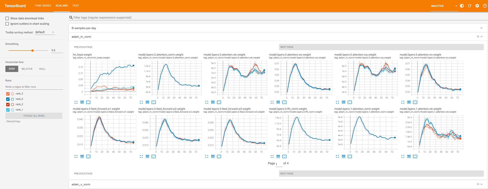
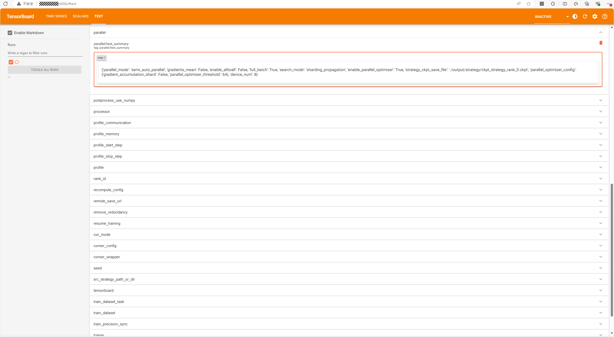

已废弃（Deprecated）
本页属于 静态图（GRAPH_MODE）实现 章节，已标记为废弃。新特性优先在「r2.0.0 动态图实现」章节演进，请优先查阅动态图相关文档。
训练指标监控

MindSpore Transformers 支持 TensorBoard 作为可视化工具，用于监控和分析训练过程中的各种指标和信息。TensorBoard 是一个独立的可视化库，需要用户手动安装，它提供了一种交互式的方式来查看训练中的损失、精度、学习率、梯度分布等多种内容。用户在训练yaml文件中配置 TensorBoard 后，在大模型训练过程中会实时生成并更新事件文件，可以通过命令查看训练数据。
配置说明
在训练yaml文件中配置”monitor_config”、”tensorboard”和”callbacks”关键字，训练中会在配置的保存地址下保存tensorboard事件文件。
配置示例如下：
yaml文件配置样例
seed: 0
output_dir: './output'
monitor_config:
monitor_on: True
dump_path: './dump'
target: ['layers.0.', 'layers.1.'] # 只监控第一、二层的参数
invert: False
step_interval: 1
local_loss_format: ['log', 'tensorboard']
device_local_loss_format: ['log', 'tensorboard']
local_norm_format: ['log', 'tensorboard']
device_local_norm_format: ['log', 'tensorboard']
optimizer_state_format: null
weight_state_format: null
throughput_baseline: null
print_struct: False
check_for_global_norm: False
global_norm_spike_threshold: 1.0
global_norm_spike_count_threshold: 10
tensorboard:
tensorboard_dir: 'worker/tensorboard'
tensorboard_queue_size: 10
log_loss_scale_to_tensorboard: True
log_timers_to_tensorboard: True
callbacks:
- type: MFLossMonitor
per_print_times: 1
monitor_config字段参数名称 |
说明 |
类型 |
|---|---|---|
monitor_config.monitor_on |
设置是否开启监控。默认为 |
bool |
monitor_config.dump_path |
设置训练过程中 |
str |
monitor_config.target |
设置指标 |
list[str] |
monitor_config.invert |
设置反选 |
bool |
monitor_config.step_interval |
设置记录指标的频率。默认为1，即每个step记录一次 |
int |
monitor_config.local_loss_format |
设置指标 |
str或list[str] |
monitor_config.device_local_loss_format |
设置指标 |
str或list[str] |
monitor_config.local_norm_format |
设置指标 |
str或list[str] |
monitor_config.device_local_norm_format |
设置指标 |
str或list[str] |
monitor_config.optimizer_state_format |
设置指标 |
str或list[str] |
monitor_config.weight_state_format |
设置指标 |
str或list[str] |
monitor_config.throughput_baseline |
设置指标 |
int或float |
monitor_config.print_struct |
设置是否打印模型的全部可训练参数名。若为 |
bool |
monitor_config.check_for_global_norm |
bool |
|
monitor_config.global_norm_spike_threshold |
设置指标 |
float |
monitor_config.global_norm_spike_count_threshold |
设置连续异常指标 |
int |
上述 xxx_format 形式的参数的可选值为字符串’tensorboard’和’log’（分别表示写入 TensorBoard 和写入日志），或由两者组成的列表，或null。未设置时均默认为null，表示不监控对应指标。
注意：当前开启对优化器状态和权重L2 norm指标的监控时会极大增加训练进程的耗时，请根据需要谨慎选择。monitor_config.dump_path路径下对应的”rank_x”目录将被清空，请确保所设置路径下没有需要保留的文件。
tensorboard字段参数名称 |
说明 |
类型 |
|---|---|---|
tensorboard.tensorboard_dir |
设置 TensorBoard 事件文件的保存路径 |
str |
tensorboard.tensorboard_queue_size |
设置采集队列的最大缓存值，超过该值便会写入事件文件，默认值为10 |
int |
tensorboard.log_loss_scale_to_tensorboard |
设置是否将 loss scale 信息记录到事件文件，默认为 |
bool |
tensorboard.log_timers_to_tensorboard |
设置是否将计时器信息记录到事件文件，计时器信息包含当前训练步骤（或迭代）的时长以及吞吐量，默认为 |
bool |
tensorboard.log_expert_load_to_tensorboard |
设置是否将专家负载记录到事件文件（见专家负载监控小节），默认为 |
bool |
需要注意的是，在没有tensorboard配置时，monitor_config在xxx_format中设置的”tensorboard”将被替换为”log”，即从写入tensorboard事件文件改为在日志中进行相应信息的打印。
专家负载监控
专家负载均衡和监控功能通过回调函数TopkBiasBalanceCallback实现，目前仅支持mcore接口Deepseek-V3模型。用户需要手动在训练yaml文件中对”model.model_config”、”tensorboard”和”callbacks”关键字进行补充配置：
model:
model_config:
moe_router_enable_expert_bias: True
moe_router_bias_update_rate: 0.001 # 0.001为Deepseek-V3官方开源配置
tensorboard:
log_expert_load_to_tensorboard: True
callbacks:
- type: TopkBiasBalanceCallback
注意：若此前没有指定tensorboard.tensorboard_dir，则仍然需要对其进行设置。
查看训练数据
进行上述配置后，训练期间将会在路径 ./worker/tensorboard/rank_{id} 下保存每张卡的事件文件，其中 {id} 为每张卡对应的rank号。事件文件以 events.* 命名。文件中包含 scalars 和 text 数据，其中 scalars 为训练过程中关键指标的标量，如学习率、损失等； text 为训练任务所有配置的文本数据，如并行配置、数据集配置等。此外，根据具体配置，部分指标将在日志中进行展示。
使用以下命令可以启动 TensorBoard Web 可视化服务：
tensorboard --logdir=./worker/tensorboard/ --host=0.0.0.0 --port=6006
参数名称 |
说明 |
|---|---|
logdir |
TensorBoard保存事件文件的文件夹路径 |
host |
默认是 127.0.0.1，表示只允许本机访问；设置为 0.0.0.0 可以允许外部设备访问，请注意信息安全 |
port |
设置服务监听的端口，默认是 6006 |
输入样例中的命令后会显示：
TensorBoard 2.18.0 at http://0.0.0.0:6006/ (Press CTRL+C to quit)
其中 2.18.0 表示 TensorBoard 当前安装的版本号（推荐版本为 2.18.0 ）， 0.0.0.0 和 6006 分别对应输入的 --host 和 --port ，之后可以在本地PC的浏览器中访问 服务器公共ip:端口号 查看可视化页面，例如服务器的公共IP为 192.168.1.1 ，则访问 192.168.1.1:6006 。
指标可视化说明
回调函数MFLossMonitor、TrainingStateMonitor和TopkBiasBalanceCallback将分别对不同的标量指标进行监控。其中TrainingStateMonitor不需要用户在配置文件中设置，会根据monitor_config自动进行添加。
MFLossMonitor监控指标
MFLossMonitor监控的指标名称和说明如下：
标量名 |
说明 |
|---|---|
learning-rate |
学习率 |
batch-size |
批次大小 |
loss |
损失 |
loss-scale |
损失缩放因子，记录需要设置 |
grad-norm |
梯度范数 |
iteration-time |
训练迭代所需的时间，记录需要设置 |
throughput |
数据吞吐量，记录需要设置 |
model-flops-throughput-per-npu |
模型算力吞吐量，单位为TFLOPS/npu（万亿次浮点数运算每秒每卡） |
B-samples-per-day |
集群数据吞吐量，单位为B samples/day（十亿样本每天），记录需要设置 |
在 TensorBoard 的 SCALARS 页面中，上述指标（假设名为 scalar_name）除了最后两个，其他都存在 scalar_name 和 scalar_name-vs-samples 两个下拉标签页。其中 scalar_name 下展示了该标量随训练迭代步数进行变化的折线图； scalar_name-vs-samples 下展示了该标量随样本数进行变化的折线图。如下图所示为学习率learning-rate的曲线图示例：

TrainingStateMonitor监控指标
TrainingStateMonitor监控的指标名称和说明如下：
标量名 |
说明 |
|---|---|
local_norm |
单卡上各参数的梯度范数，记录需要设置 |
device_local_norm |
单卡上的总梯度范数，记录需要设置 |
local_loss |
单卡上的局部损失，记录需要设置 |
device_accum_local_loss |
单卡上的总局部损失，记录需要设置 |
adam_m_norm |
优化器一阶矩估计各参数的范数，记录需要设置 |
adam_v_norm |
优化器二阶矩估计各参数的范数，记录需要设置 |
weight_norm |
权重L2范数，记录需要设置 |
throughput_linearity |
数据吞吐线性度，记录需要设置 |
注意，对于local_loss指标和device_accum_local_loss指标：
实际写入日志或tensorboard的指标名会添加标签（例如
local_lm_loss、device_accum_local_lm_loss）以表示损失的来源。当前存在两种可能的标签lm和mtp，其中lm表示常规的模型交叉熵损失，mtp表示模型MultiTokenPrediction层的损失。在流水线并行或梯度累积场景，
local_loss指标在写入tensorboard时会记录单卡上所有micro batch的平均局部损失，在写入日志时则会记录每个micro batch的局部损失（指标名带前缀”micro”，例如micro_local_lm_loss）；而上述场景以外时，local_loss与device_accum_local_loss等价。
TopkBiasBalanceCallback监控指标
TopkBiasBalanceCallback将对MoE模型的专家负载情况进行监控和动态均衡（相关配置见专家负载监控小节）。动态均衡功能本文不涉及，监控的指标名称和说明如下：
标量名 |
说明 |
|---|---|
expert_load |
所有MoE层各专家的训练负载占比，记录需要设置 |
指标可视化样例
根据具体的设置，上述指标将在 TensorBoard 或日志中进行展示，如下：
日志效果示例

tensorboard可视化效果示例
adam_m_norm：

local_loss与local_norm：

expert_load（图中为3个MoE层的各自16个专家的负载变化曲线）：

文本数据可视化说明
在 TEXT 页面中，每个训练配置存在一个标签页，其中记录了该配置的值。如下图所示：

所有配置名和说明如下：
配置名 |
说明 |
|---|---|
seed |
随机种子 |
output_dir |
保存checkpoint、strategy的路径 |
run_mode |
运行模式 |
use_parallel |
是否开启并行 |
resume_training |
是否开启断点续训功能 |
ignore_data_skip |
是否忽略断点续训时跳过数据的机制，而从头开始读取数据集。只在 |
data_skip_steps |
数据集跳过步数。只在 |
load_checkpoint |
加载权重的模型名或权重路径 |
load_ckpt_format |
加载权重的文件格式。只在 |
auto_trans_ckpt |
是否开启自动在线权重切分或转换。只在 |
transform_process_num |
转换checkpoint的进程数。只在 |
src_strategy_path_or_dir |
源权重分布式策略文件路径。只在 |
load_ckpt_async |
是否异步加载权重。只在 |
only_save_strategy |
任务是否仅保存分布式策略文件 |
profile |
是否开启性能分析工具 |
profile_communication |
是否在多设备训练中收集通信性能数据。只在 |
profile_level |
采集性能数据级别。只在 |
profile_memory |
是否收集Tensor内存数据。只在 |
profile_start_step |
性能分析开始的step。只在 |
profile_stop_step |
性能分析结束的step。只在 |
profile_rank_ids |
指定rank ids开启profiling。只在 |
profile_pipeline |
是否按流水线并行每个stage的其中一张卡开启profiling。只在 |
init_start_profile |
是否在Profiler初始化的时候开启数据采集。只在 |
layer_decay |
层衰减系数 |
layer_scale |
是否启用层缩放 |
lr_scale |
是否开启学习率缩放 |
lr_scale_factor |
学习率缩放系数。只在 |
micro_batch_interleave_num |
batch_size的拆分份数，多副本并行开关 |
remote_save_url |
使用AICC训练作业时，目标桶的回传文件夹路径 |
callbacks |
回调函数配置 |
context |
环境配置 |
data_size |
数据集长度 |
device_num |
设备数量（卡数） |
do_eval |
是否开启边训练边评估 |
eval_callbacks |
评估回调函数配置。只在 |
eval_step_interval |
评估step间隔。只在 |
eval_epoch_interval |
评估epoch间隔。只在 |
eval_dataset |
评估数据集配置。只在 |
eval_dataset_task |
评估任务配置。只在 |
lr_schedule |
学习率 |
metric |
评估函数 |
model |
模型配置 |
moe_config |
混合专家配置 |
optimizer |
优化器 |
parallel_config |
并行策略配置 |
parallel |
自动并行配置 |
recompute_config |
重计算配置 |
remove_redundancy |
checkpoint保存时是否去除冗余 |
runner_config |
运行配置 |
runner_wrapper |
wrapper配置 |
monitor_config |
训练指标监控配置 |
tensorboard |
TensorBoard配置 |
train_dataset_task |
训练任务配置 |
train_dataset |
训练数据集配置 |
trainer |
训练流程配置 |
swap_config |
细粒度激活值SWAP配置 |
checkpoint |
Checkpoint2.0下权重保存和加载相关配置 |
上述训练配置来源于：
用户在训练启动命令
run_mindformer.py中传入的配置参数；用户在训练配置文件
yaml中设置的配置参数；训练默认的配置参数。
可配置的所有参数请参考配置文件说明。